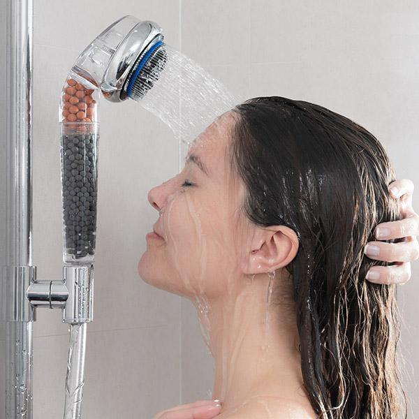

မနက်ခင်းရေချိုးခြင်းဖြင့် ရရှိနိုင်တဲ့ ကျန်းမာရေးကောင်းကျိုးများ

ရေချိုးတာဟာ တကိုယ်ရည်သန့်ရှင်းဖို့အတွက်သာမက ကိုယ်ကျန်းမာဖို့ စိတ်ကျန်းမာဖို့အတွက်ပါ အရေးကြီးတဲ့အရာ ဖြစ်ပါတယ်။
ကျွန်တော်တို့ အတော်များများအနေနဲ့ ရေချိုးတဲ့အခါ မနက်ခင်းချိုးကြတာ နဲပါတယ်။
အများစုအနေနဲ့က ညနေအလုပ်ကအပြန်၊ ကျောင်းကအပြန်မှ ရေချိုးလေ့ရှိကြပါတယ်။
ဘာလို့လဲဆိုတော့ မနက်စောစောရေချိုးရင် အေးတာကြောင့်လည်းပါသလို မနက်ခင်းကျအလုပ်သွားဖို့၊ ကျောင်းသွားဖို့၊ မနက်စာစားဖို့၊ ထမင်းချိုင့်ထည့်ဖို့စတဲ့ လုပ်စရာတွေရှိပြီး အဲ့ဒါတွေလုံးပန်းနေရတာနဲ့ မနက်ခင်းရေချိုးဖို့ အချိန်ပေးဖို့လည်း မလွယ်လို့ပါ။
အိပ်ရာထနောက်ကျရင် ရေချိုးဖို့မပြောနဲ့။ မနက်စာစားဖို့တောင် မမှီတာမျိုး ရှိနိုင်ပါတယ်။
ဒါ့အပြင် တချို့က မနက်စောစောရေချိုးရင် ဖျားမှာကြောက်တာလည်း ပါပါတယ်။
ဒါပေမယ့် သုတေသနပြုလေ့လာမှုတွေအရ မနက်ခင်းရေချိုးတာဟာ ကောင်းကျိုးများပြီး စိတ်ရောကိုယ်ပါ ကျန်းမာစေဖို့ အထောက်အကူပြုကြောင်း သိရပါတယ်။
ဒါကြောင့် ခုတပတ်မှာ မနက်ခင်းရေချိုးခြင်းရဲ့ ကောင်းကျိုးလေးတွေကို သိသလောက်ရေးသားတင်ပြချင်ပါတယ်။
အဲ့ဒါတွေကတော့
၁။ စိတ်ရော ကိုယ်ပါ လန်းဆန်းတက်ကြွစေခြင်း
ကျွန်တော်တို့ဟာ တညလုံးလဲလျောင်းအိပ်ထားတာကြောင့် မနက်အိပ်ရာထထချင်းမှာ အနည်းနဲ့အများဆိုသလို ညောင်းညာပြီး ထိုင်းမှိုင်းနေတတ်ပါတယ်။ အိပ်ရေးပျက်ရင် အိပ်ရေးမဝတဲ့အခါတွေမှာဆိုရင် မနက်အိပ်ရာထ ပိုထိုင်းမှိုင်းနေနိုင်ပါတယ်။
မနက်စောစောရေချိုးလိုက်ခြင်းဖြင့် ရေအေးအေးလေးရဲ့ အထိအတွေ့ကြောင့် အာရုံကြောတွေကိုလှုံ့ဆော်လိုက်သလိုဖြစ်ပြီး ညောင်းညာထိုင်းမှိုင်းနေတာတွေ သက်သာသွားကာ စိတ်ရောကိုယ်ပါလန်းဆန်းတက်ကြွလာပါတယ်။
၂။ စိတ်ဖိစီးမှုကို လျော့ပါးစေခြင်း
မနက်စောစောရေချိုးခြင်းဖြင့် ဦးနှောက်ကို ကြည်လင်လန်းဆန်း အားပြည့်စေပြီး စိတ်ထဲအတွေးထဲက တင်းကြပ်မှုတွေကို ပြေလျော့စေတဲ့အတွက် စိတ်ဖိစီးမှုတွေကို သက်သာစေနိုင်ပါတယ်။
၃။ ပိုနေတဲ့အဆီတွေကို ကျစေပြီး ကိုယ်ရည်စစ်စေနိုင်ခြင်း
ဒီလိုပြောလို့ တချို့ကဟုတ်ပါ့မလား လို့ မေးနိုင်ပါတယ်။ ဒါပေမယ့် လေ့လာမှုတွေအရ မနက်စောစောရေအေးနဲ့ နေ့တိုင်းချိုးပေးမယ်ဆိုရင် လပိုင်းလောက်ဆိုရင်ကို ပိုနေတဲ့အဆီတွေကို ကျစေပြီး ကိုယ်ရည်စစ်စေနိုင်ကြောင်း သုတေသနတွေအရသိရပါတယ်။
သင်မယုံဘူးဆိုရင် တခြားဝိတ်လျော့နည်းတွေသုံးမကြည့်ဘဲနဲ့ မနက်စောစောရေအေးနဲ့နေ့တိုင်း ချိုးကြည့်ပါ။ လပိုင်းလောက်ဆိုရင်ကို ကိုယ်ရည်စစ်လာကြောင်း သင်ကိုယ်တိုင်တွေ့ရပါလိမ့်မယ်။
၄။ ကိုယ်ခံအားကို ကောင်းစေနိုင်ခြင်း
မနက်စောစောရေချိုးရင် အအေးမိတာ၊ နှာစေးတာ၊ ဖျားတာတွေဖြစ်တယ်ဆိုတာ ရေတအားအေးတာနဲ့ လေတိုက်ထဲမှာချိုးပြီး ရေချိုးပြီးတဲ့အခါမှာလည်း လေတိုက်ခံလို့ဖြစ်တာပါ။
ရေချိုးခန်းထဲမှာ ရေကြက်သီးနွေးလေးနဲ့ မနက်စောစောချိုးပေးမယ်ဆိုရင် တကိုယ်လုံးက သွေးကြောတွေကိုပွင့်စေပြီး သွေးလှည့်ပတ်မှုကို ကောင်းစေကာ ကိုယ်ခံအားကိုမြင့်တက်စေနိုင်ပါတယ်။
ကိုယ်ခံအားမြင့်တက်လာတဲ့အတွက် ဖျားတာ၊ အအေးမိတာတွေ၊ ပိုးဝင်တာတွေ အလွယ်တကူမဖြစ်နိုင်တော့ပါဘူး။
ရေချိုးပြီးတဲ့အခါမှာတော့ လက်ရှည်အပါးလေး ခဏဝတ်ထားဖို့လိုပါတယ်။
၅။ ကျားဟော်မုန်းကို မြင့်တက်အားကောင်းစေခြင်း
သုတေသနပြုချက်တွေအရ မနက်စောစောရေချိုးတာဟာ ခန္ဓာကိုယ်ရဲ့ ကျားဟော်မုန်းထုတ်လှုပ်တဲ့ဖြစ်စဉ်ကို အားပေးကာ ကိုယ်တွင်းရှိ ကျားဟော်မုန်းပမာဏကို မြင့်တက်အားကောင်းစေနိုင်ကြောင်း သိရပါတယ်။
ကျားဟော်မုန်း (Testosterone) ဟာ သုတ်ကောင်တွေထုတ်ဖို့၊ မျိုးအောင်ဖို့၊ လိင်ပိုင်းဆိုင်ရာစွမ်းဆောင်ရည်ကောင်းဖို့အတွက် အရမ်းအရေးပါတဲ့ ဟော်မုန်းပါ။
သူနည်းရင် ပန်းသိပ်မလန်းတာ၊ ကလေးရဖို့ ခက်တာတွေ ဖြစ်နိုင်ပါတယ်။
ဒါကြောင့် သင်ဟာ ပန်းသိပ်မလန်းသလိုခံစားရရင်၊ လိင်ပိုင်းဆိုင်ရာစွမ်းဆောင်ရည်ကျသလို ခံစားရရင်၊ ကလေးရဖို့ခက်တာဖြစ်နေရင် မနက်စောစောကို ရေအေးနဲ့ နေ့တိုင်းရေချိုးတာကို လုပ်ကြည့်သင့်ပါတယ်။
၆။ အသားအရေနဲ့ ဆံပင်အတွက် အထောက်အကူပြုခြင်း
မနက်ခင်းရေချိုးခြင်းဟာ အသားအရေမှာရှိသင့်တဲ့ အစိုဓါတ်ကို အားဖြည့်ပေးတဲ့အတွက် အသားအရေကို ကြည်လင်ဝင်းပစိုပြေစေပြီး အသားအရေခြောက်သွေ့ ကွဲအက်တာမျိုးတွေမဖြစ်အောင် ကာကွယ်ပေးပါတယ်။
ဒါ့အပြင် ဆံပင်ကျွတ်ခြင်း၊ ဆံသားခြောက်ခြင်းတွေကိုလည်း မဖြစ်အောင် ကာကွယ်တားဆီးပေးနိုင်ပြီး ဆံသားကျန်းမာရေးကို ကောင်းမွန်စေပါတယ်။
၇။ ကြွက်သားတင်းရင်းမှုတွေကို ပြေလျော့စေခြင်း
မနက်စောစောရေချိုးခြင်းဟာ ကြွက်သားတင်းရင်းနာကျင်မှုတွေကို ပြေလျော့သက်သာစေနိုင်ပါတယ်။ ဒါကြောင့် အကြောတက်ညောင်းကိုက်တတ်တဲ့ သူတွေအနေနဲ့ မနက်စောစောရေချိုးသင့်ပါတယ်။
ဒါတွေကတော့ သိသလောက် မနက်ပိုင်းရေချိုးခြင်းရဲ့ ကောင်းကျိုးတွေပါ။
အဆုံးသတ်အနေနဲ့ မှာချင်တာကတော့ မနက်ပိုင်းရေချိုးတဲ့အခါ ရေချိုးခန်းထဲမှာမဟုတ်ဘဲ အပြင်မှာချိုးမယ်ဆိုရင် လေတိုက်ပါက အချိန်အကြာကြီးမချိုးပါနဲ့။ ခပ်သွက်သွက်ပဲချိုးပါ။ ရေချိုးပြီးပါက အကျီလက်ရှည်လေး ခဏလောက်ဝတ်ထားပါ လို့အကြံပေးချင်ပါတယ်။
Source-Dr 528